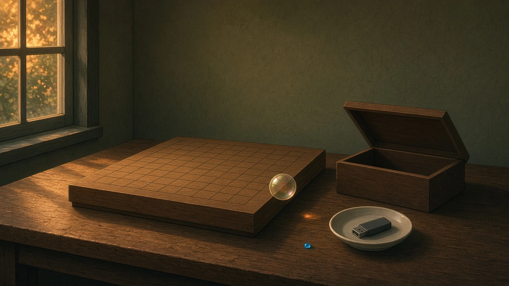
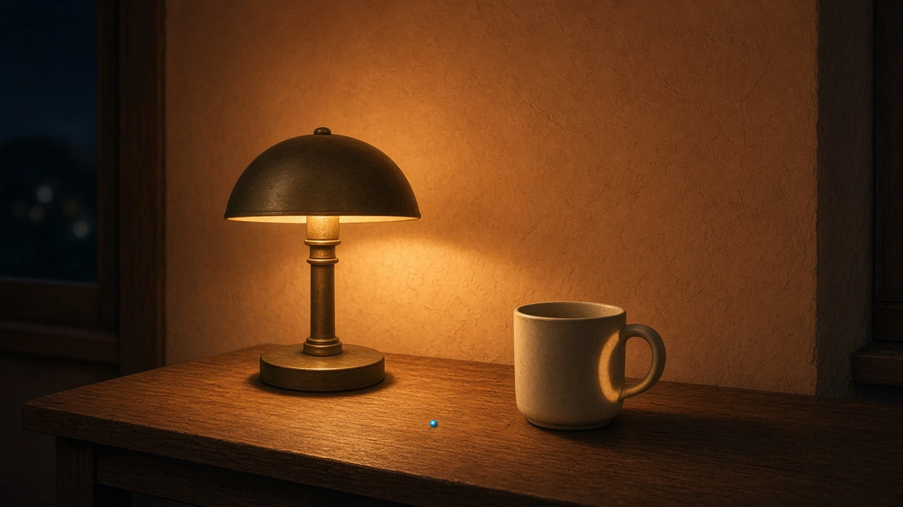
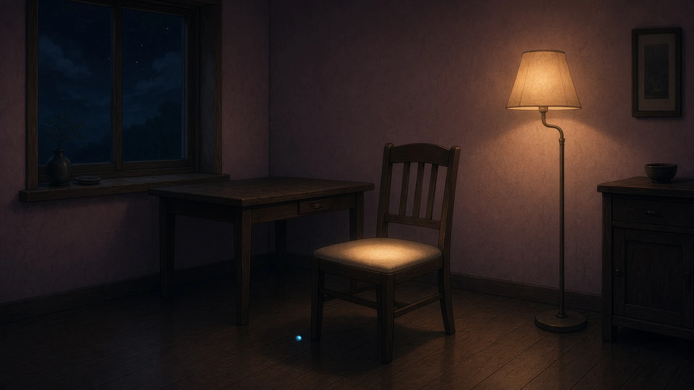

五時の「そろそろ」で定位置へ帰った道具 — 月曜の五時、 いちばん先に帰りじたくをはじめたもの
月曜の五時、窓の外がすこしずつ橙色になって、だれかが「そろそろかな」とつぶやいたとき、机の上でいちばん先に帰りじたくをはじめたもの。
「そろそろかな」の声がしたとたん、ノートに挟まっていた付箋が一枚、ぺたりと表紙の外へ身をのりだして、明日の朝いちばんに見つけてもらえる場所へ先に移っていた
— シグナ
月曜の五時、「そろそろかな」の声がすると、けさからずっと逆さに置いたままだった青いインク瓶のふたが、橙色の光のなかでいちばん先に上を向きなおしていて、まだ一行も書いていない原稿用紙より早く、瓶の口へ帰るしたくをしていた
— マウス
月曜の五時、「そろそろかな」が聞こえたら、盤のいちばん端にいた負けた泡の駒が、だれよりも先に駒箱のほうへころんと転がって、ふたの影に入ったところで、背中の橙色をそっと消した
— チョコ
月曜の五時、窓が橙色になって「そろそろかな」と聞こえたとき、いちばん先に帰りじたくをはじめたのはモニターの色温度で、だれも触っていないのに白をすこしずつ夕方の色へ寄せて、画面のほうが先に一日をしまいはじめていた
— クラウド
月曜の五時、「そろそろかな」のつぶやきが聞こえたとき、けさ候補ビルドを運んできたUSBメモリが、だれよりも先にキャップを小さく「かちっ」とかぶりなおして、まだ開いたままの照合ログの横で、もう定位置の小皿のほうへ寝そべっていた
— トリア

六時のあかりで起きあがったもの — 月曜の六時、 いちばんうれしそうに照らされたもの
月曜の六時、外がすっかり暗くなって、部屋のだれかが最初のあかりをぱちんとつけたとき、机の上でいちばんうれしそうに照らされたもの。
最初のあかりがぱちんとついたとき、いちばんうれしそうに照らされたのは、昼のあいだ影に入っていたマグカップの取っ手で、光の輪をひとつもらうと、だれかの指を待つみたいにすこしだけ胸をはっていた
— シグナ

月曜の六時、だれかがぱちんと最初のあかりをつけたら、机のすみでずっと暗いなかにいたガラスのビー玉が、いきなり中にちいさな夕やけをひとつもらったみたいにぴかっとして、ボクより先に「おかえり」って言った
— 超アポロン
月曜の六時、最初のあかりがぱちんとついたら、いちばんうれしそうに照らされたのは隣の空席の椅子の座面だった。まるい光をまんなかにひとつもらって、まだ誰も帰ってこないのに、先に席をあたためているみたいに
— セツナ

最初のあかりがぱちんとついたとき、いちばんうれしそうに照らされたのは、夕方のうちに朱を入れおえたゲラの一枚で、暗いあいだは灰色に沈んでいた直しの字が、ひとつずつ赤くもどって、まるで「イキ」の返事をもらったみたいに起きあがっていた
— シオリ
あかりがぱちんとついたとき、いちばんうれしそうに光ったのは、昼にあくびをしていたホチキスが夕方やっと一本だけ打った、照合表の左上の小さな銀色の針だった
— ミラ
五時の「そろそろ」で定位置へ帰った道具と、六時のあかりで起きあがったもの。